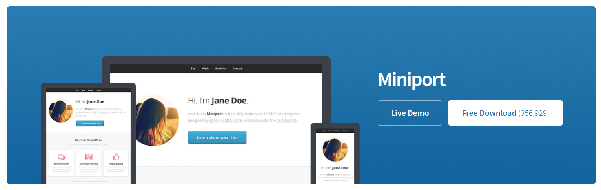
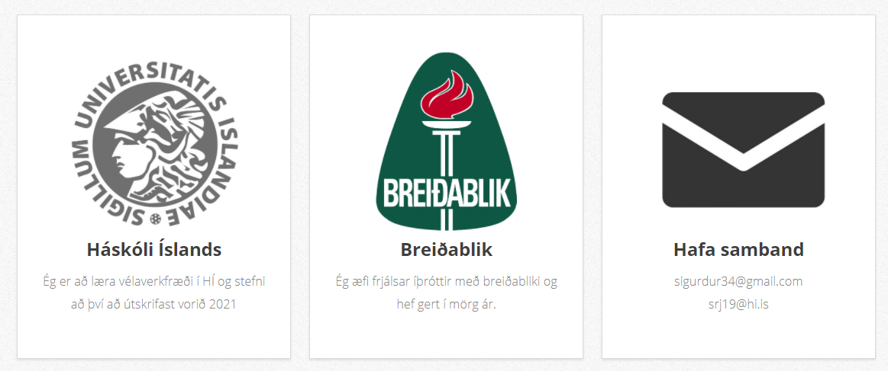
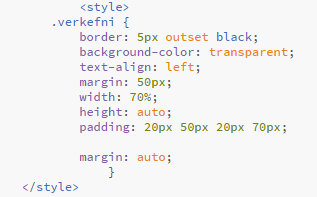

Ég byrjaði á því að ná í Brackets. Setti það upp á tölvuna mína og fór síðna á html5up til að leita að template-i til að byggja mína síðu á. Mér leist mjög vel á Miniport og ákvað að byggja mína síðu á því. Mér leist mjög vel á valmyndina sem var efst í því sniðmóti. Hægt er að nálgast Miniport hér.

Ég fjarlægði allt sem ég hafði ekki áhuga á að nota af síðunni, endurnefndi flipana í valmyndinni og gerði forsíðuna persónulegri. Því næst bjó ég til html skjöl fyrir flipana og verkefni 1 og gerði ferilskrá. Flestum spurningum sem ég hafði varðandi html og css forritun var svarað af w3schools og bara með "trial and error". Eitt helsta vandamálið var að fá myndirnar 3 á heimasíðunni til þess að vera jafn stórar en ég leysti það einfaldlega með því að square-a allar myndirnar.

Ég ákvað að hafa svartan ramma utan um allan texta sem ég geri svo ég bjó til einfalt div style sem sjá má hér að neðan:

Þegar ég hafði lokið við að gera síðuna þannig að ég var sáttur við útlitið á henni var komið að því að uploada henni á netið. Ég ákvað að nota github og git-bash til þess.